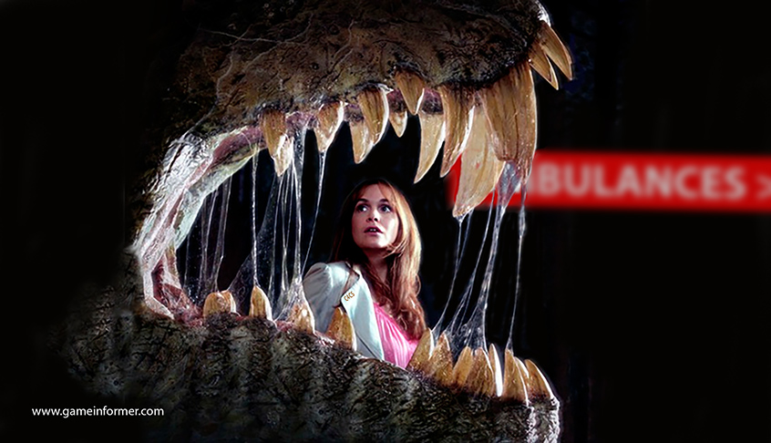

|
Yes, we continue to further the scientific studies of the largest,
baddest, meat-eaters in history. Sometimes with only slight, unimagineable losses (we hire by the busload). This is done with
extreme care, as if we needed to tell you that. tC4CS has the
official blessing from PETA and NASPCA, who, unlike years past, now email their "Yeah, you go right ahead" instead
of sending out another meal, er, regional representative to inspect our testing procedures.
"Excellence In Work" has never stopped us before. It's really, really slowed us down, but never truly stopped us. Someday
we hope to achieve it.
We can, and often do, discover more semi-interesting facts concerning the carnivorous Cretaceous Period Dinosaurs in one week
than anyone has in the previous millions of years. For instance, who would have thought that a 6-ton meat eater would be scared
to death of the sound from a "Tickle Me Elmo" doll? [Well, at least the first couple of times] Or that the juvenile Majungasaur,
once trained, will roll over for a marshmallow? [That is, until they are about two years of age and reach what we call "The
Zaayus Level" named in honor of the late Dr. Zaayus for his work with our 2-yr old Majungasaurs]
With all this in mind, our scientists here at The Center continue to stride, not
necessarily forward but in some direction or other, doing their best to understand these gigantic killer maniac beasts. Ok,
so most of the striding is just to get the hell out of their way.
The following photos are taken directly from research done or attempted here on site at The Center. Some are under current conduction or have been conducted in the recent past. These behind-the-scenes looks
are images of research that you, the general public, are not allowed to witness in person. This is due to something called
"safety concerns" and the lack thereof... add to that the usual zoning laws, insurance reasons, plus a ton of local,
state, and federal laws. If that's not enough, throw in the fact that we have been known from time to time to "inadvertantly"
lock and seal the doors behind our former research department interns. May they rest in peace.
Early in the morning, just before the ambulances arrive, our staff is already applying theories, techniques, and bandages.
To date, The Center has been at the forefront of thousands, er.. hundre...uh,
well, MANY Cretaceous Period discoveries and junk like that. We sweat and toil every day to further our world-leading knowledge
of the largest predators ever known.. or, uh, NOT known, since humans weren't around back then. So that would be "further
the knowledge of Earth's largest land predators never known by mankind"... or something like that.
Hey, we're scientists (sorta) not @!#* writers.
L17.81g:124CTT CORE TEST
Cold-Blooded Or Warm Blooded? The L17 Core Temperature Test was first and lastly conducted by
our late Dr. Shoals (shown in photo below). Using probes to determine core temperatures of our female Spinosaurus aegyptiacus,
Shoals was to gently place what was basically a giant rectal thermometer into position then collect the gathered information
on a floppy disk.
This L17 test, the first - and last - of it's kind in the history of the world to finally put an end as to whether Dinosaurs
were/are warm or cold-blooded, was abruptly halted only seconds after this picture was taken.
| CORE TEMP/SPINO: 124, MAR 1965. T. Shoals DIR. |
|
| Next Time We'll Ensure The Dinosaur Is a) Sedated and b) Tied Down. Our Bad, Ted! RIP Buddy. |
Though further research has led us to believe that rectal thermometers
used in Dinosaur research should NOT be pre-soaked in ice water, none of our esteemed research staff want to do this experiment
again. Ever. And should we ever find another sucker, er, volunteer intern... next time we will try sedating the Dinosaur first.
Core temperatures continued to be elusive as the darn things kept eating our digital thermometers and the researchers holding
them. In the end [haha] we've given up until a new batch of interns is hired.
And though it played almost no part in this incident, though it sure didn't help, we strongly discourage the use of flash
photography within 100 yards of our DinoResidents. The last thing you want to do is startle a 16-ton animal.
(Photo by the late Len Scapon)
09DDD.M49197 THREE DIMENSIONAL MAPPING AND MOTION STORAGE
3-D Motion Mapping will someday prove invaluable as an aid to something, and The Center for
Cretaceous Studies is doing all and spending all it can to ensure we are at the forefront of whatever it is or will be.
Our crack scientific team, when not in rehab for doing crack, has been trying to outfit one of our 18-year old Tyrannosaurs
with a specialized "suit" since it was 14-years old. This suit will eventually, some day, maybe fit over the chest, limbs,
face, and legs, of our T. rex.
| SOMETIMES OUR TEST SUBJECTS GET 'KINDA' LOOSE |
|
| DinoResident Looks Out Window Of Building R, Wanting To Go Outside And Play |
The suit is equipped with an array of motion capture sensors for
use in preserving a 3-D account of the body movement when photographed by a special camera and computer programming that must
have cost millions. Luckily, we have all our expenses covered by a grant from the U.S. Government.
This advanced digital-imaging project, headed up by C4CS Funding Director, Candace
B. Ritenoff, will not only provide unprecedented moment-to-moment documentation of a live Dinosaur, but will also give the
visiting American people the breath-taking realism and seamless layer animation they have never thought would come from tC4CS labs. It sure would surprise the hell out of us, that's for sure.
The custom-made, lycra-and neoprene bodysuit, featuring 328 reflective "marker balls", will instantly relay trillions of bytes
of information to a central computer in tC4CS mainframe supercomputer shed. This
high-tech computer can process dozens of things per minute and features over 32kb of digital storage. That's almost half the
computing power used to land on the moon! Our scientists have been known to use it for hours on end playing Space Invaders
and downloading email.
The acquired data is then stored on a floppy disk here at tC4CS by our engineers
working with DinoMotion Systems, a division of the Center for Cretaceous Studies.
DinoMotion Co-Director, Dr. Phil N. DeBlancs, said, "Years from now, historians will be able to access high-quality images
of what a Dinosaur might have looked like while he was, say, eating a guest at tC4CS
on 2 August 2049, or chomping down someone's German Shepherd on the afternoon of 32 June 2156. This will eventually be highly
sought-after, critical information. Just, you know... not yet."
Pre-testing has shown that some activities which cause the sensors
to malfunction, remains a mystery - but is thought to be something radical, such as the Dinosaur breathing or moving. The
mystery continues partly because none of our scientific staff wants to investigate too closely.
We continue to seek new research department staff willing to lift and carry a very large green-screen background behind the
monitored Dinosaur so all this junk works correctly. And then there's that need to get the suit ON the Dinosaur thing.
We need volunteers for that too. Hey! Are ya interested in being at the forefront of DinoResearch?
3.141592653589793238462643... DNA SAMPLING,
MOLECULAR PALEONTOLOGY AND REFINEMENT
PROGRAM
Deoxyribonucleiac Acid Testing procedures, one of our core studies, began the week following
our "weeding out" process of dozens of tC4CS scientists who mistakenly thought
they were signing up for a bowling league. This "weeding out" process was conducted in test form: The first one hundred of
our top research staff who could actually spell deoxyribonucleiac acid correctly would win.
After the results were known, the two guys who were closest - they both guessed it started with a 'd' - not only joined esteemed
tC4CS scientist Dr. Alvin Einsteen, but also received much better parking spots,
coffee mugs with their initials, and white scientist lab coats with their names embroidered.
| HE'S OK WITH MATH, BUT TRY BALANCING A CHECKBOOK |
|
| This Is Actually His Wife's Recipe For Raspberry Streudel |
Noted tC4CS scientist,
Dr. Einsteen has for many years researched and improved upon the genetic formulas which The Center has then applied to the breeding of our residents. Even more amazing: he's still around to talk about it!
Starting with Dr. Beckmann's "Originale Dinosaur Elixer and Carburetor Cleaner", Dr. Einsteen has "engineered" many
of the animals that will probably eat you or a loved one during your visit. Uh, we mean MEET you or a loved one during your
visit, of course.
The genetics coding is like, super difficult, ya know? In tC4CS labs, if you
put a "1713.485g134" on the data line where it should be "1713.48Sg134", you don't get a Daspletosaurus torosus, but
something that resembles road tar and tasting like warm tapioca pudding! [Or so said the late Dr. Soos, who tried it just
hours before he.... uh, retired]
As you might imagine, the DNA Department runs at a very steady, very deliberate, and very methodical pace. Quite unlike the
other labs here at The Center where they always seem to be running away
from something... very quickly. Absolutely no mistakes can be tolerated throughout this process as the goal is to create big,
huge, and even giant, carnivorous Dinosaurs.
That doesn't mean there are never any boo-boos. Ask Dr. Einsteen about that January '88 incident and how he got an entire
new staff in February 1988.
731.2189 DINOSAUR SELF RECOGNISANT PROGRAM
Dinosaur Self Recognition: In our ongoing and sometimes semi-knowledgable means and thoughts
process, tC4CS Center researchers wanted to find out if the Raptors were able
to identify themselves in a mirror. While it is commonly known that primates, dolphins, and some birds are able to comprehend
their image in a mirror, the 731 tests [pronounced 'seven-thirty-one tests'] set out to discover if the trait could also be
found in DinoResidents.
| 731 TESTS: SELF RECOGNISANT TESTING, DAY 1 |
|
| After This We Put The Mirror On A 10-Ft Pole And STILL Lost Lab Employees |
Much the same as research done with chimps and dolphins, we use the
same theory that "Something's Gotta Work". Specially if you throw enough money at it.
Armed with a hefty grant and an unlimited number of unwitting volunteer interns, our first group theorized that simply holding
up a mirror in front of the face of a Oviraptor philoceratops (6-ft, 45 lbs) would be good enough. Eh, not so much.
Our intial R&D Team led us to the first of many conclusions. Conclusions that would be repeated many, many, MANY times: nine
minutes into the initial Research Project 731 tests, we were ready to hire an entirely new replacement group. You'd think
omniraptors wouldn't tear into lab employees with that much ferocity.
GROUP B, which started the following day, quietly huddled in the Paddock corner -
some whimpering some praying - mostly because the straw they drew was to work with Bahariasaurs ingens a 'slightly'
larger species at 40-ft and 7 tons. The next day GROUP C was more of a 'long goodbyes'
scientific bunch, totally different from Thursday's GROUP D long remembered for the
immediate panic attack followed by the real attack.
Each group [currently GROUP X is up to bat] re-theorized, using highly scientific
algorythms and absurd plot charts, figuring the previous Group had not carried the one, or something. The search was on!
Results to date are inconclusive, although some species seem to realize the image in the mirror is theirs. That is, before
they eat the mirror. Testing continues... every time we get a hefty new grant and a bunch of replacement interns! Say... you
wouldn't be interested in working at the very forefront of Dinosaur Research, would ya?
DW.32.03.109 GALLONS OF WATER NEEDED TO WASH ADULT DINOSAUR
Body Mass Index (BMI) Testing was first conducted at the local public swimming pool during normal
operating hours. After the initial test, we abandoned this idea when several law enforcement officials representing local,
state, and federal levels, determined - from a very safe distance - that this probably wasn't a very good idea.
No foolin'? Hey, science ain't pretty. If you don't want your kids eaten alive at the local swimming pool, then don't let
them go swimming!
Unknown anywhere else in paleontology, we have observed our DinoResidents acting much like their modern day avian descendants-
they love to take "dirt baths". And like your pet kitty, they really don't like to take a water-based bath. However, unlike
your little Tabby, our "kitty" will eat you.
| THINK THIS IS TOUGH? TRY USING A CHAMOIS ON THEM |
|
| She Keeps Eating Crew Members With The Buckets And Hoses And Stuff |
Within 60 days we began the T. Rex Bucket Brigade, and promptly lost
89 employees in 7 horrendous- yet highly educational- minutes.
Construction of the T. Rex Wash-O-Matic was finished in early 1994. This automated the cleaning of our giant meat-eaters.
Workplace fatality numbers fell dramatically - more than .0013%.
Yet, to date we have been unable to ascertain any verifiable results from our scientists and 'volunteers'. It seems that while
studying the audio portion of the tapes, it has been very difficult to distinguish any screamed... er, announced findings.
Between the sounds of trickling water as it streams into floor drains, or the 'slight' gushing roar from shredded hoses and
ripped-open water pipes, the unrelenting screams, and constant, constant constant deafening roaring, we can't make
heads or tails of how much water it takes!
The other significant and somewhat notable discovery our scientists have stumbled upon has to do with the activities involving
a select few of our Dinosaur species. It seems when the water is turned on and cascades from overhead shower nozzles, the
giant Raptors start to "sing" in the shower. Sometimes it's Show Tunes, and other times it's Classics. However, almost all
of them are off by one or two keys.
| YOU'D SCREAM TOO IF YOU HEARD THEM SING |
|
| Soap In The Eyes Is Usually A Death Sentence To Anyone In The Same Zip Code |
DINOSAUR DENTAL DEPARTMENT
The No Placque Paddock wasn't required until tC4CS
opened to the public. Up to that point our Dinosaurs were consuming "normal" diets: cows, horses, pigs, the occasional stray
cat. Suddenly there was a need to remove objects stuck between Raptor teeth: shoes, pieces of cameras, car doors, etc.
Nothing is more impressive than a clean, sharp, set of killing teeth in a mouthful of 8"-long examples. You would think this
is the first thing you notice when you meet our mankilling, bone-crunchi...uh, cute and snuggly Dinosaurs. But their
teeth are usually the last thing you'll ever see. Ever.
| DINO-HYGIENE: PART CARE/PART GRAND EXPERIMENT |
|
| Some Of Our Techniques May Need A Little Polishing During The Oral Exam Part |
Though our DinoResidents seem to constantly have pieces of bloodied,
torn, flesh between their red-stained teeth, our DinoDentists, along with unknowing staff of "volunteers" [interns] regularly
clean and inspect the huge chompers of every beast at The Center.
tC4CS Dentist In Charge, Dr. D.K. Toof (DDS), has been overseeing the cleaning
and oral hygiene of every Dinosaur at The Center since... oh, around noon last
Tuesday, when he took over for the late Dr. Krest (DDS/D. the extra D is for Deceased) who "retired" only two days after
his predescesor, Dr. Kohlgate, also "retired", on the same day as Dr... well, you get the idea.
| WHAT? YOU THOUGHT THEY KNOW WHEN TO SPIT?!? |

|
| Show 'Em Charts. Show 'Em Stats. They Just REFUSE To Floss |
| TARBOSAUR VISITS DINODENTIST FOR BRACES |
|
| Gassed-Out Dino Learns That Chewing On Cars Damages Pretty Smile |
No longer able to use his arms after losing them in a brushing incident
on the same afternoon he assumed his duties, Dr. Krest has several staff "volunteers" [meaning: not so much of the volunteer
stuff] at his disposal to aid in proper dental care of our DinoResidents.
Our Dental staff has been able to gather much information on the development of theropod teeth, the chewing [not much], the
swallowing [very much] and waaaaaaaaay too many accounts of biting pressure capabilities. Dr. Krest is working on a paper
that will announce all of these findings as soon as he learns to type with his feet.
BONE PREPARATION AND DESTRUCTION DEPARTMENT
Working on The Ancients has never been easier, now that we have a State Of The Art facility right here at The Center. Housed
in what used to be our first floor hallway closet, the new Bone Prep Department is one of the few remaining places still using
dynomite to extract bone from rock... indoors.
Our search for only the most knowledgable, highly skilled personel to staff this department, working with once-in-a-lifetime
fossils, proved fruitless. So we gave up and hired a couple losers from our custodial staff. What they don't know about these
bones or how to extract them from field castings could fill volumes. But they more than make up for it in labor costs.
Bringing with them a combined experience of more than two weeks, our Bone Prep Department toils night and day - unless there
is a waste basket that needs emptying or a spill in one of the employee cafeterias.
Priceless as some of these bones are, our own Kretaceous Kitchen staff have been known to sneak in at night, looking for soup
bones to be used for the next day's lunch menu. Last month our accountants figured the Wednesday Soup Of The Day cost us $495,716.32
per serving.
| BONE PREP DEPARTMENT WORK "SAMPLES" |
|
| Few Are From MYA. Most Of Them We Found Out In The Parking Lot 20 Minutes Ago |
| BONE PREP ABOUT TO FRAG ANOTHER $1 MILLION FEMUR |
|
| Today's Fossil = Tomorrow's Soup Bone |
Of course our main focus here at The
Center are the live Dinosaurs just down the hallway. But now, with our very own Bone Prep Department,
we're also keeping in touch with The Ancients. Our staff is able to break fossils on their very own or drop them on the floor
all by themselves, instead of having to ship them out and rely on some outside source screwing them up.
It takes our staff hundreds, and sometimes dozens, of minutes to prep and shape an ordinary rock into what appears to be a
65-million year old bone. tC4CS warehouse contains thousands of casts waiting
to be demolished by our staff.
Smaller examples of the finished work can be purchased at tC4CS Gifte $hoppe,
while we ship the larger pieces to really crummy museums [the kind with "See The Two-Headed Sheep" or "Live Gator Rasslin"
signs out front] and grade schools around the world. They're too young to know the difference between a rock and a real fossil
anyways.
DINOSAUR SANITATION DEPARTMENT
"Ex Stink" doesn't mean they smell good now. They eat. They poop. That's one thing that hasn't changed in the 65 million years
since they first extincted. But it wasn't until CEO and Founder Dr. Beckmann stepped in a big pile of you-know-what that The Center decided to make better use of these "leftovers".
Our highly overrated, er, minimally qualified Dino Poop Squad staff operates nearly around the clock, except on weekends,
nights, and most days, to ensure that your visit to the Center for Cretaceous Studies
and Cretaceousland! is not a stinky, messy one, but a somewhat pleasant experience...
even if it's a short experience.
| DINOPOOP SQUAD GOT THEIR - - - TOGETHER |
|
| It's Either This Or Diapers. For Some Reason, No One Volunteers For That. |
Utilizing 20-foot toilet brushes and a former gasoline-hauling semi
truck filled with Tidy Bowl, our crews can be on the scene within minutes of a Poop Alert. Of course, we aren't talking cute
little bunny pellets here. We measure this 'stuff' in tons per week during peak periods [aka: family summer vacation time].
Hurriedly brought into our labs, our team of scientists get a good look at the internal goings-on of our residents that a
fossil would never reveal. Sifting through the shoes, purses, backpacks, watches, etc, tC4CS
staff is able to track the health and condition of our Dinosaurs when compared to known entities, which in this case is: missing
visitors and guests.
Back in 2003 a tour group of Chinese officials came to visit, intent on using our DinosResidents in a "dragon theme" for their
Olympic bid. An hour later, our Dinosaurs were hungry again.
As you can probably imagine, tests in this 'area' of the Raptors are not very pretty, don't smell well, and don't make for
good reading, so we'll just say there are several key tests going on day-to-day that involve 'this end' of our Dinosaurs.
The Sanitation crews continually work, when not on break, to make your eventual final resting place cleaner.
It takes good management to keep up, or pick up, after these critters, and a lot of luck to not end up
as part of the 'pick up stuff'. In the history of tC4CS Poop Squad, none
of our crews seem to have much going for them with that management skills or luck stuff.
NUCLEAR PALEONTOLOGY
Ever since tC4CS's late Dr. Rupert Uppenhammer returned from his field trip to
New Mexico in the mid-1950's with some "pretty" and "warm" rocks, the Center for Cretaceous Studies has been utilizing the world's greatest or most deadliest (your choice) form of earth moving material known
to mankind: nuclear energy!
The Center leads in this area, where no one else seems to want to follow. Not
only does this practice move tons of earth in a split-second, thus making a DinoDig much easier than the usual shovel and
back-breaking labor, it microwaves our field crew's coffee from 9 miles away, and also provides worker benefits that other
museum or privately funded dinosaur digs will never have- in the form of chemotherapy and dental and full-body x-rays while
you wait!
| OUR FIRST NUCLEAR DINODIG, 1961 |
|
| We Were Amazed This Film Made It Out Ok. No One Else Did |
Although our well chosen sites are usually done in small, far off
lands with little or no laws concerning above ground thermonuclear detonations, we take great comfort in the fact that none
of our competitors will be able to get within 12 miles of our sites until 2080. Of course, this doesn't stop our determined
tC4CS field crews from going right in there and gathering bones today, often in
15-minute intervals only. Besides, at this stage there isn't much digging involved. It's more or less taking a broom or vacuum
cleaner in and gathering the remains of these rare prehistoric animals.
As you can probably guess, careers in this area of field recovery are short. Only a select few can make it, er, work through
the end of the week. So, if you are interested in travel to exotic lands, digging or sweeping dinosaur bones, and being part
of our Nuclear Paleontology Field Operations crew, send in your resume today! You could be the Senior Field Supervisor by
Wednesday!
Join The Next C4CS DinoDig Crew!
| DEFENSE DEPT. PICKS UP OUR DINODIG FROM ORBITER XI |
|
| Hoo-boy Did We Hear About This From The State Department |
DO NOT TRY THIS AT HOME!
We Are Professional, Skilled Scientists, Well, "Trained" Scientis... Ok, We Are Scientists. Sort Of. Almost.
Hey, Just
Don't DO This Stuff, Ok??
CONTINUE TO NEXT PAGE
|